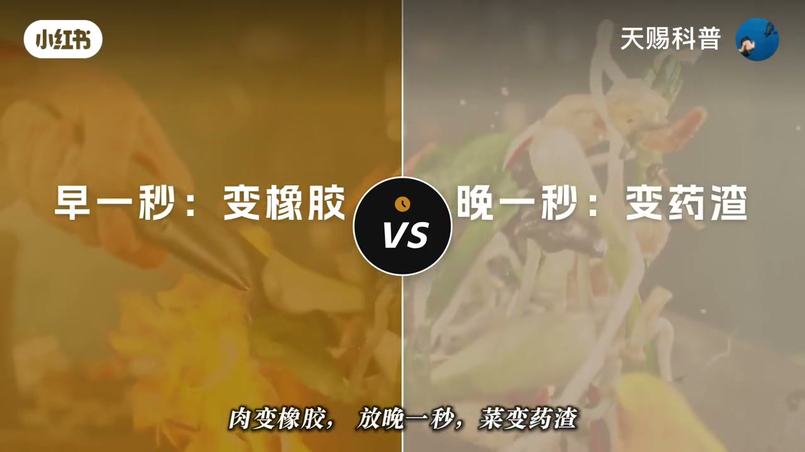
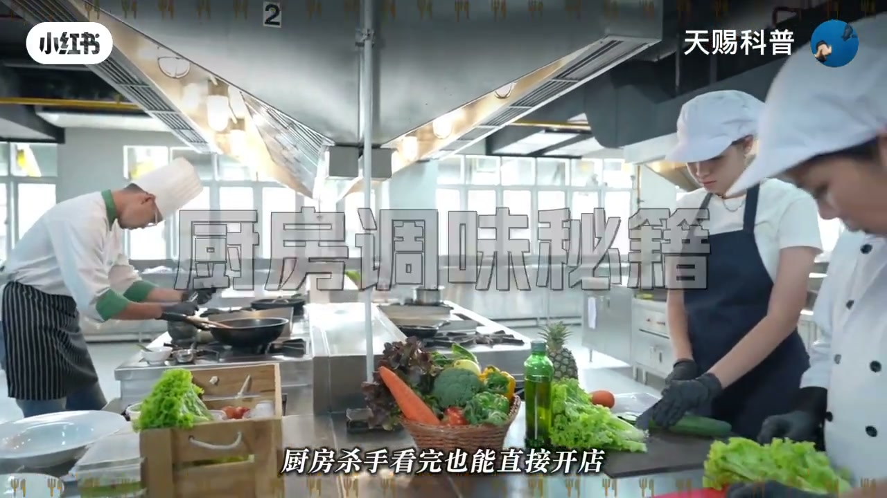
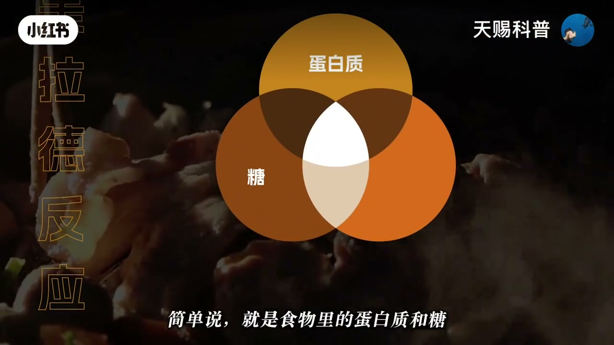
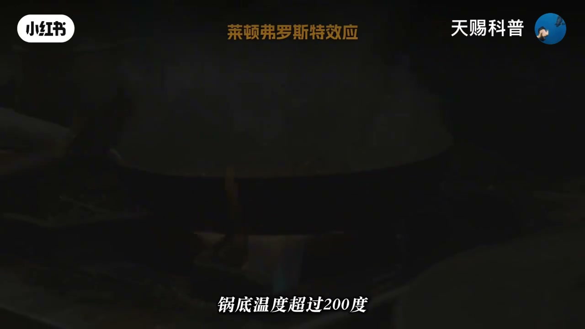
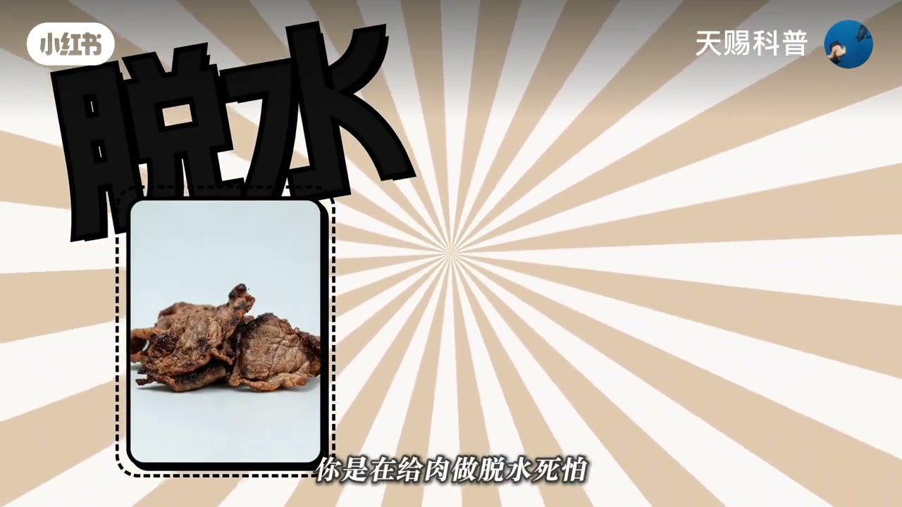
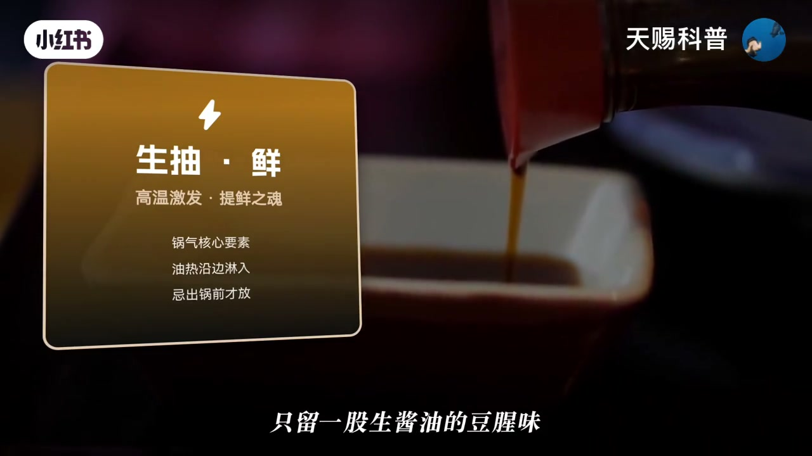
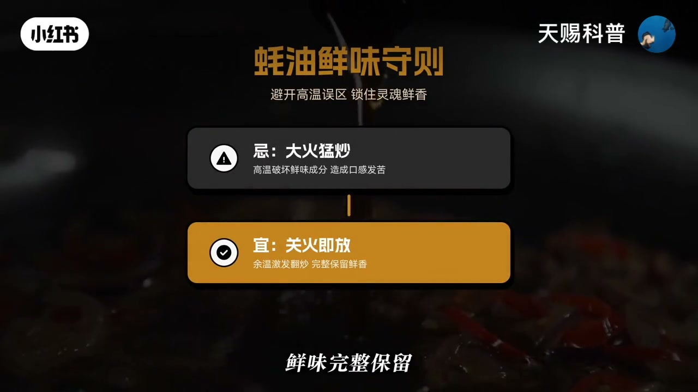
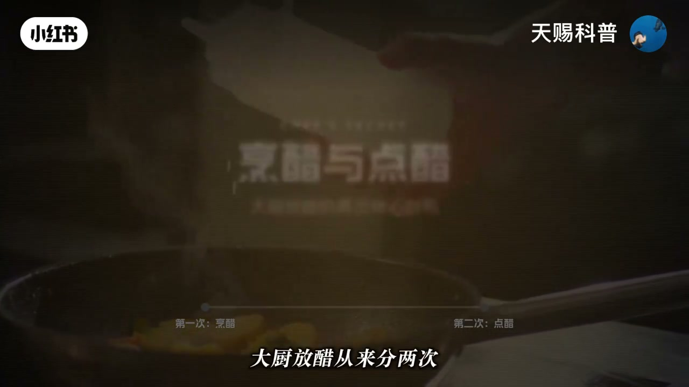

内容要点
一支 5 分半的炒菜调料时间线教学。UP 主「Lune小淇」用一个扎心的开场点破真相：在家炒不出饭店味不是手艺差，而是放调料的时间全反了。视频用「美拉德反应」和「莱顿弗洛斯特效应」两个物理化学概念解释饭店与家用的差距，然后给出一张完整的调料下锅时间表：盐分肉/菜/汤三条铁律，生抽高温激发、老抽管色中途加、蚝油味精怕热出锅前放，葱姜蒜先姜再蒜最后葱，醋分烹醋和点醋两次，干粉调料各有时间点，水淀粉临出锅前才勾。最后总结：大厨只是把这场「温度×化学反应×时间」的博弈规则背熟了。
知识结构
炒不出饭店味是放调料的时间全反了。大火炒时倒蚝油 = 给全家炒苦味素。后厨学徒第一天学的不是颠锅，是调料下锅时间表。
蛋白质和糖在 140 度以上生成几百种香味分子；饭店火力是家用 3-6 倍，瞬间爆炒锁住水分，香味炸在外面。不是手艺差距，是物理差距。
锅烧到冒烟再倒油（锅底超 200 度），食材下锅的蒸汽膜形成莱顿弗洛斯特效应，不粘锅不糊底，表面疯狂发生美拉德反应。
盐靠渗透压脱水，提前撒盐把肉细胞的水抽干。肉菜变色放盐、青菜出锅前几秒放、煲汤最后 15 分钟放。
生抽管鲜必须高温沿锅边激发；老抽管色中途加；蚝油味精鸡精怕热（谷氨酸钠超 120 度变焦谷氨酸钠发苦），关火前出锅前放。
葱姜蒜顺序：先姜再蒜最后葱（姜耐热冷油先下、蒜易糊、葱娇气最后放）。醋分两次：热油烹醋为香、出锅点醋为酸。
白胡椒花椒出锅前放、五香粉加水前油煸、孜然粉肉快熟时撒；水淀粉临出锅前快速搅，提前放会沉底结块。
炒菜的本质是「温度 × 化学反应 × 时间」的博弈：热锅冷油用莱顿弗洛斯特效应创造 200 度锅面，美拉德反应锁香，每样调料按自己的化学性质选择下锅时机——盐分肉菜汤三条铁律、生抽高温激发、老抽管色、蚝油怕热、姜蒜葱有序、醋分烹与点、淀粉临出锅。记住这张时间表，在家也能逼近饭店味。
00:00-00:38误区总览：放调料的时间全反了
视频用一句扎心的话开场：「怪不得自己在家怎么都炒不出饭店那味，原来不是你手艺差，是放调料的时间全反了。」同样一份盐、一瓶酱油、一口锅，「放早一秒肉变柴，放晚一秒菜变药渣」。
最典型的错误是蚝油：「你家灶台上那瓶蚝油，你是不是每次都大火炒的时候往里倒？恭喜你，你一直在给全家炒苦味素。」
关键线索：饭店后厨学徒第一天学的不是颠锅，「是备调料的下锅时间表」——调料时机是基本功而非技巧。


00:39-01:29美拉德反应与火力差距
第一个陌生的概念是美拉德反应：「食物里的蛋白质和糖，在高温下谈了场恋爱，生出来几百种香味分子」，那股让你口水狂飙的焦香就是它。但这场「恋爱」有门槛——「温度必须到140度以上」。
家用与饭店的差距就在火力：「你家灶台烧到冒烟，锅底温度可能才刚刚够；饭店后厨那口灶，火力是你家的三到六倍，你家最猛5000瓦，人家轻松飙到三万瓦」。
结果完全不同：「同一块肉，你在家是慢慢热，蛋白质温温吞吞的收缩，水分一点点渗出来，炒完又柴又没香气；饭店是瞬间爆炒，表面一层直接锁死，水分留在里面，香味炸在外面。这不是手艺的差距，是物理的差距。」


01:30-01:56热锅冷油：家用逼近饭店效果的四个字
科学家研究过，家用灶台想逼近饭店效果，「靠四个字：热锅冷油」。操作是「锅烧到冒烟，再倒油，锅底温度超过200度」。
背后的物理是莱顿弗洛斯特效应：「食材下去的瞬间，底部水分会炸出一层蒸汽膜，把菜和锅底隔开，菜悬浮在一层气垫上，不粘锅、不糊底」，同时表面继续疯狂发生美拉德反应。
UP 主强调：「热锅冷油不是玄学，是你家厨房里就能用的物理学。」


01:57-02:50盐的三条铁律
盐看起来老实，「其实阴得很，它有个本事叫渗透压」。提前撒盐，「盐会把肉细胞里的水硬生生抽出来」——炒肉一上来就放盐，「你不是在炒肉，你是在给肉做脱水，吃起来像咬皮带」。
正确操作：肉下锅先别管盐，等变色了、表面蛋白质凝固了再放，这时盐只渗进去一点点，「刚好入味又不多水，外焦里嫩」。
青菜完全反过来：「青菜要出锅前几秒钟才放盐，青菜细胞壁薄，盐一进去水就哗哗流，你盐放早了，锅里不是炒菜，是煮菜汤。」
煲汤更讲究：「盐要忍到最后15分钟」，一开始就放，蛋白质提前凝固，鲜味锁在肉里出不来，「汤跟刷锅水一样」。
最后 UP 主给出可背诵的三条铁律：「肉菜变色放，青菜出锅放，汤最后放，三条铁律，不是建议。」


02:51-03:35酱油与鲜味调料
生抽和老抽长得差不多，「活完全不同」。「生抽管鲜，必须高温激发」，油热了沿着锅边淋下去，「滋拉一声，酱香瞬间爆开，饭店那股锅气一半功劳是他的」。等菜快熟了才倒，高温没了，生抽不香了，只留生酱油的豆腥味。
「老抽管色」，红烧肉油亮的酱红色全靠它，「中途加入」——加太早颜色发黑，加太晚来不及上色。
蚝油、味精、鸡精这类鲜味调料有致命弱点：「怕热」——主要成分谷氨酸钠超过 120 度会变成焦谷氨酸钠，「鲜味直接消失还带点苦」。所以「大火猛炒的时候倒蚝油，等于把钱往火里扔」，正确是「关火前出锅前放，余温翻两下就够」。


03:36-04:30葱姜蒜顺序与两次用醋
90% 的人都在犯的错：葱姜蒜一股脑全扔进去，「结果蒜糊了发苦、葱焦了发碎、姜还是一块姜，什么味都没出来」。
正确顺序是「先姜再蒜最后葱」：姜最耐热，冷油时先下慢慢煸出香；蒜容易糊，等姜出香了再放，微微金黄立刻下主菜；葱最娇气，菜炒得差不多才放，翻几下就出锅，葱香清爽。
醋是另一个被低估的角色，大厨分两次放：「第一次叫烹醋，热油时沿锅边倒一点，高温瞬间把酸味烧掉，只留浓郁的香；第二次叫点醋，出锅前淋几滴，保留酸爽。」糖醋排骨少了最后这几滴，就只剩甜腻没灵魂。


04:31-05:34干粉调料与水淀粉勾芡
干粉类各有时间点：白胡椒粉出锅前放，久煮发苦；花椒粉更急性子，「高温煮五分钟麻味跑光，只剩苦味」，出锅前撒；五香粉十三香要加水前用油煸一下，不然跟撒土没区别；孜然粉肉快熟时撒再烤两分钟。
最易翻车的是水淀粉勾芡：「一定出锅前临边快速搅，汤汁瞬间浓稠，把味道像外套一样裹在每块食材上。千万别提前放，淀粉沉底结块，变成一坨怎么都炒不散的浆糊。」
收尾点题：「每个调料什么时候下锅，背后都是温度、化学反应和时间在暗中博弈。大厨不是天赋异禀，他只是把这场博弈的规则背熟了。」

完整转录（53段）
以下文本由 Whisper medium 模型自动转录，可能存在少量识别误差，已尽可能修正。
怪不得自己在家怎么都炒不出饭店那味 原来不是你手艺差 是放调料的时间全反了
你妈颠了一辈子勺 可能连盐什么时候放都是错的 人家大厨不是天生饭林根
他只是比你多懂一门时间玄学 同样的盐 同样的酱油 同样的锅 放早一秒
肉变香蕉 放完一秒菜变药渣
你每个月花3000块下馆子 不如今天花三分钟搞懂这件事 你家灶台上那瓶好友 你是不是每次都大火炒的时候往里倒
恭喜你 你一直在给全家炒苦味素
饭店后厨学徒第一天学的不是电锅 是备调料的下锅时间表 备不出来的 第二天就不用来了 今天把这张表给你
厨房杀手看完也能直接开店
先说一个你可能从来没听过的词叫美拉德反应 别被名字吓到他干的事
你天天见 肉下锅自拉一身 表面变焦变金黄 那股让你口水狂飙的香味就是他
简单说就是食物里的蛋白质和糖 在高温下谈了场恋爱 生出来几百种香味分子 但这场恋爱有个门槛 温度必须到140度以上
你家灶台烧到冒烟 锅底温度可能才刚刚够
而饭店后厨那口灶 火力是你家的三到六倍 你家最猛5000瓦 人家轻松飙到三万瓦
同一块肉 你在家是慢慢热 蛋白质温温吞吞的收缩 水分一点点渗出来 炒完又柴又没香气
饭店是瞬间爆炒 表面一层直接锁死 水分留在里面 香味炸的外面 这不是手艺的差距 是物理的差距 但这还不是最扎心的
科学家研究过 家用灶台想逼近饭店效果 靠四个字
热锅冷油 锅烧到冒烟 再到油 锅底温度超过200度
食材下去的瞬间 底部水分会炸出一层蒸汽膜 把菜和锅底隔开 这叫莱顿弗洛斯特效应 菜悬浮在一层气垫上 不粘锅 不糊底
表面还在疯狂发生美拉德反应 所以热锅冷油不是玄学 是你家厨房里就能用的物理学 好
锅的问题解决了 接下来才是真正要命的调料的时间线 先说盐 盐看着老实 其实阴的很 它有个本事叫渗透压
你往肉上提前撒盐 盐会把肉细胞里的水硬生生抽出来 炒肉一上来就放盐 你不是在炒肉 你是在给肉做脱水 死怕
吃起来像咬皮带 正确操作 肉下锅 先别管盐 等变色了 表面蛋白质凝固了 再放
这时候盐只渗进去一点点 刚好入味 又不多水 外焦里闷 但炒青菜完全反过来
青菜要出锅前几秒钟才放盐 青菜细胞并薄 盐一进去水就花花流 你盐放早了 锅里不是炒菜 是煮菜汤
煲汤更讲究 盐要忍到最后15分钟 一开始就放
蛋白质提前凝固 鲜味锁在肉里出不来 汤跟刷锅水一样 所以
肉菜变色 放青菜 出锅放汤 最后放三条铁律 不是建议
再说酱油 生抽和老抽长得差不多 活完全不同 生抽管鲜必须高温激发 油热了沿着锅边淋下去
滋拉一声 酱香瞬间爆开
饭店那股锅气一半功劳是他的 你要等菜快熟了才到 高温没了
生抽不干了 只留一股生酱油的豆腥味
老抽管色 红烧肉那种油亮的酱红色全靠它中途加入 加太早 颜色发黑 加太晚 来不及上色
蚝油 味精 鸡精这帮鲜味炸弹有个致命弱点 怕热 主要成分果然酸辣超过120度
会变成焦果然酸辣 鲜味直接消失 还带点苦 所以你大火萌炒的时候到蚝油 等于把钱往火里扔
关火前出锅前放 余温翻两下就够 鲜味完整保留 接下来这个
90%的人都在犯错 葱 姜 蒜 你是不是每次一股脑全扔进去 结果蒜糊了发苦 葱焦了发碎
姜还是一块姜 什么味都没出来 正确顺序 先姜再蒜 最后葱 姜最耐热 冷油时先下
慢慢煸出香 蒜容易糊 等姜出香了再放
微微金黄立刻下煮菜 葱最焦起 菜炒的差不多 才放
翻几下就出锅 葱香清爽 化龙点金
还有一个被低估的狠角色 醋 大厨放醋 从来分两次 第一次叫烹醋
热油时沿锅边倒一点 高温瞬间把酸味烧掉 只留浓郁的香 第二次叫点醋
出锅前淋几滴 保留酸爽 糖醋排骨少了 最后这几滴就只剩甜腻没灵魂
热油烹醋为了香 出锅点醋为了酸 缺一步都是半成品 最后说干粉类 白胡椒粉出锅前放
酒煮发苦 花椒粉更急性子 高温煮五分钟 麻味跑光 只剩苦味出锅前撒
五香粉十三香 要加水前用油边一下 不然跟撒土没区别 孜然粉肉快熟时撒再烤两分钟
那个香味能让隔壁敲你家门 还有个最容易翻车的 水淀粉勾芡
一定出锅前临边临边快速搅 汤汁瞬间浓稠 赠量 把味道像外套一样裹在每块食材上 千万别提前放
淀粉沉底结块 变成一坨怎么都炒不散的江湖 你看炒菜从来不是凭感觉的事
每个调料什么时候下锅 背后都是温度 化学反应和时间在暗中博弈
大初不是天赋异禀 他只是把这场博弈的规则背熟了 而你从今天起也知道了
下次站在灶台前 别在手忙脚乱 啥都一起扔 按这张时间表来 你会发现
自己炒出来的味道跟饭店之间的距离可能就差最后一口锅气了 而那口锅气你多练两次也能找到